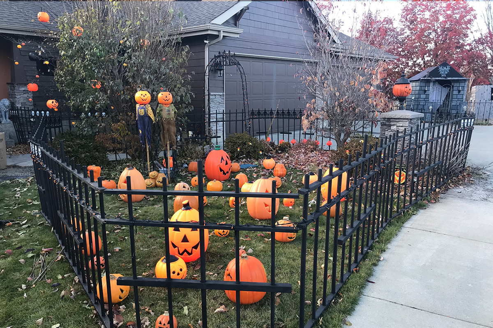

Updates
31 Days of Halloween Movies 2020: Oct 18-31
Posted: November 2, 2020
Halloween 2020 is a wrap! We really enjoyed the variety of movies we watched this year. For the month we watched a total of 61 movies released from 1933-2020, excluding the 60s and 70s.
| Decade | Movies watched |
|---|---|
| 1930s | 1 |
| 1940s | 12 |
| 1950s | 6 |
| 1960s | 0 |
| 1970s | 0 |
| 1980s | 9 |
| 1990s | 4 |
| 2000s | 12 |
| 2010s | 15 |
| 2020s | 2 |
Here's the list of the 30 movies we watched from October 18-31:
- The Creature Walks Among Us (1956)
- Abbott and Costello Meet the Mummy (1955)
- Blade II (2002)
- Sleepy Hollow (1999)
- Monster House (2006)
- Blade: Trinity (2004)
- Fright Night (1985)
- 30 Days of Night (2007)
- Train to Busan (2016)
- Fright Night (2011)
- Underworld (2003)
- Underworld: Evolution (2006)
- The Addams Family (1991)
- Underworld: Rise of the Lycans (2009)
- Sundown: The Vampire in Retreat (1989)
- The Selling (2011)
- Addams Family Values (1993)
- Transylvania 6-5000 (1985)
- The Amityville Horror (2005)
- Van Helsing (2004)
- Hatchet (2006)
- Hatchet II (2010)
- Shaun of the Dead (2004)
- ParaNorman (2012)
- Hatchet III (2013)
- Victor Crowley (2017)
- House on Haunted Hill (1959)
- Hocus Pocus (1983)
- Trick r' Treat (2007)
31 Days of Halloween Movies 2020: Oct 1-17
Posted: October 18, 2020
In the "before times" we weren't able to watch many Halloween movies. Since we aren't "haunting" outside this year, we decided to watch some favorites as well as so "new to us" films. For the first part of the month we've leaned heavily into horror-comedy and The Universal Monster movies.
Here's the list of the 31 movies we watched from October 1-17:
- The Lost Boys (1987)
- Zombies of Mass Destruction (2009)
- Phantom of the Opera (1943)
- Stitches (2012)
- Son of Dracula (1943)
- The Invisible Man's Revenge (1944)
- The Mummy's Ghost (1944)
- Wolfop (2014)
- Another WolfCop (2017)
- The Invisible Man (1933)
- House of Frankenstein (1944)
- Vampires vs. The Bronx (2020)
- The Mummy's Curse (1944)
- The Invisible Man Returns (1940)
- The Invisible Woman (1940)
- Invisible Agent (1942)
- Evil Dead (2013)
- House of Dracula (1945)
- The Babysitter (2017)
- The Babysitter: Killer Queen (2020)
- The Monster Squad (1987)
- She-Wolf of London (1946)
- Abbott and Costello Meet Frankenstein (1948)
- Abbott and Costello Meet the Invisible Man (1951)
- Deathgasm (2015)
- The Return of the Living Dead (1985)
- Dead Before Dawn (2012)
- Alvin and the Chipmunks Meet Frankenstein (1999)
- Creature from the Black Lagoon (1954)
- Revenge of the Creature (1955)
- The Changeling (1980)
Haunt plans canceled for 2020
Posted: October 8, 2020
Due to the pandemic and safety concerns for everyone involved, we're taking this year off. Take care and stay safe.
Halloween 2019 Walk-Thru Video
Posted: January 30, 2020
The walk-thru video is finally complete. Aside from having footage after the sun went down, we're pretty happy with the end result. Enjoy!
Another Halloween in the books!
Posted: November 7, 2019
Considering how cold it was we had a pretty good turnout! We're editing a walk-thru video of the full display and will post it as soon as it's done.
The pumpkin patch comes alive
Posted: October 29, 2019
{kind=link}
On Sunday, October 27, we setup the basic layout of our pumpkin patch. There are a handful of lighted pumpkins in the patch. 2 bumpkins watch over it and have lighted pumpkin heads…
Club Dead and cemetery are almost complete!
Posted: October 26, 2019
{kind=link}
This update covers the last couple of weeks.
For the weekend of October 19-20, we:
- completed some minor prop work.
- planned for the next weekend.
- wrote out our Halloween day list of activities.
- did some clean-up in the shop.
Read the rest of "Club Dead and cemetery are almost complete!"
Alcove, pumpkin tree, and last section of front yard fencing
Posted: October 14, 2019
{kind=link}
Today's main focus was on the alcove. We:
- hung pumpkins in the tree.
- placed some old fashioned lighted witches, ghosts, Frankenstein monsters, and mummies. They follow along the sidewalk inside the fence. They were a great find a garage sale a few years back.
- setup 3 of the witches around a cauldron…
Read the rest of "Alcove, pumpkin tree, and last section of front yard fencing"
Mausoleum finished, new fog pipe, and tombstone lighting
Posted: October 13, 2019

We focused on work in the cemetery. First we completed the detail work in the mausoleum. Along with hanging the ghost and placing the coffin inside, we also placed our Zombie Owl to keep watch. Then, we placed and tested the lights for the tombstones. Our final project was…
Read the rest of "Mausoleum finished, new fog pipe, and tombstone lighting"
Club Dead and cemetery detail work
Posted: October 12, 2019

Today the weather cooperated again. We finished the detail work on the band stage area of Club Dead. This included power and lights as well the setup of Fright Night's backup band members…
Interior yard fence lights
Posted: October 11, 2019
{kind=link}
Most of the snow is now gone and temperatures have returned to normal. I got the interior yard fence lights strung and attached. I also setup the power on a timer for the fence and the arbor. It's always invigorating to get the first set of lights up and working!
Interior yard fence and arbor

Posted: October 7, 2019
Today, the focus was on the "Welcome" arbor and interior fence sections. Had a little rain, but otherwise it was another great day to work outside. I didn't get a photo as I ran out of time. The photo was taken after we had some snow a few days later.
Club Dead walls coverings and Angel of Death

Posted: October 6, 2019
While today the focus was inside, it was another great weather day. We've been trying to figure out a way to showcase our Angel of Death prop. Like a Halloween miracle, some inspiration hit and we spent the first part of the day creating a cutout in the club wall for the Angel. Then, we turned our attention to covering the walls of that don't have permanent covering. We finished the day by hanging the curtains that lead to the entrance from backstage. We also hung the Schlitz's spinning beer globe and setup the base power supplies.
Cemetery initial setup and Club Dead walls and roof
{kind=link}
Posted: October 5, 2019
For our official build kick-off, Mother nature is definitely in the "treat" mood. Plenty of sunshine, great temps, and very little wind. Starting in the cemetery, we built the fence and mausoleum. We also placed the undertaker's shack. Then we turned our attention to Club Dead and managed to get all the walls and roof constructed! Unfortunately we didn't take any photos of the club walls and roof.